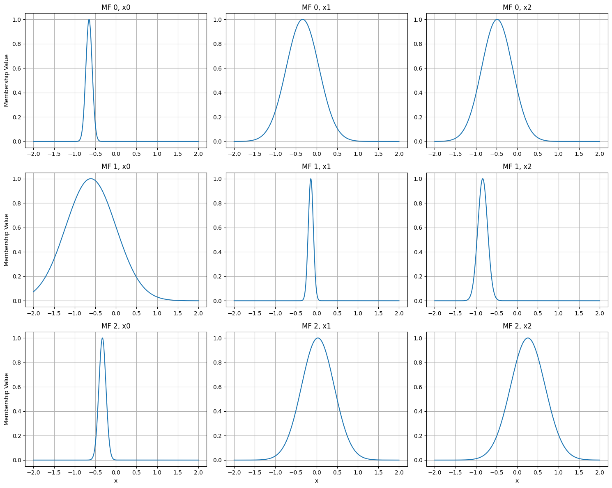
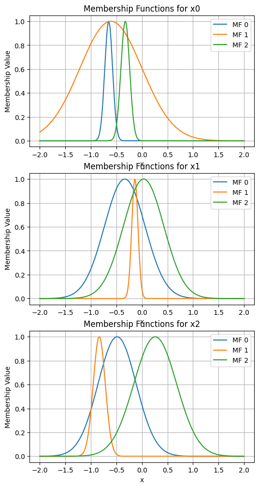
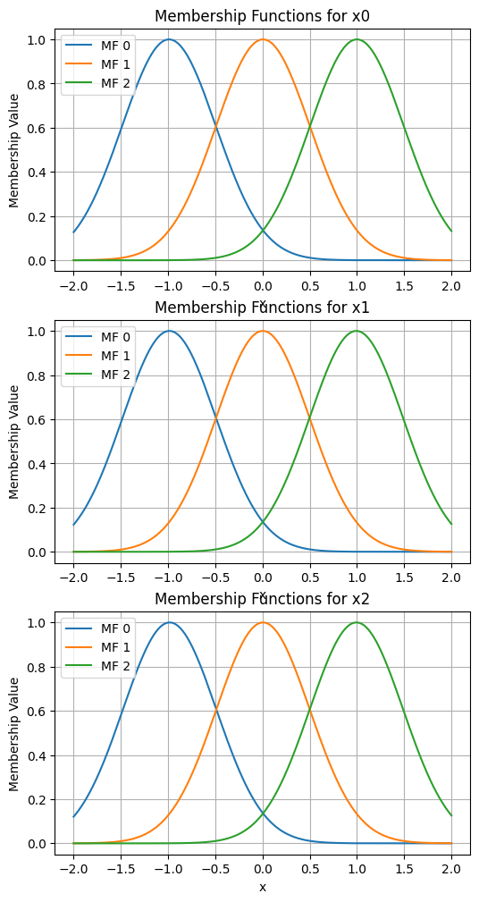
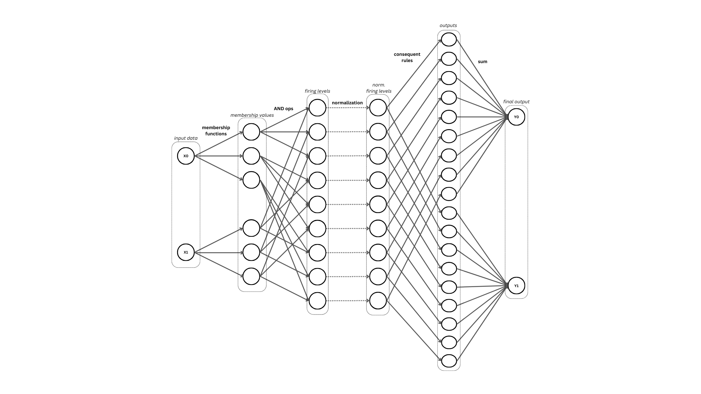
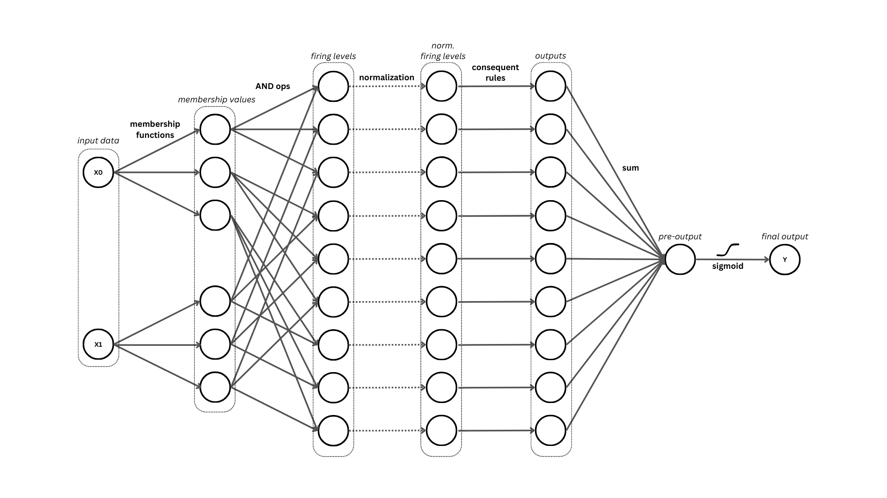
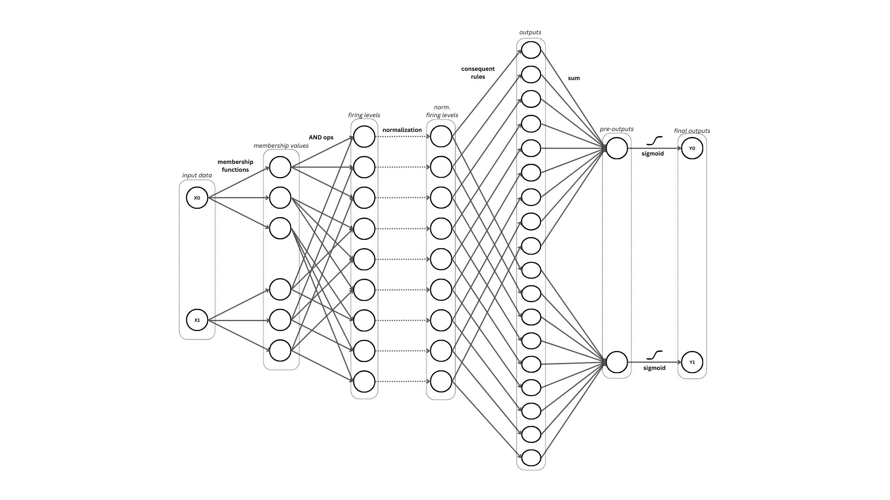
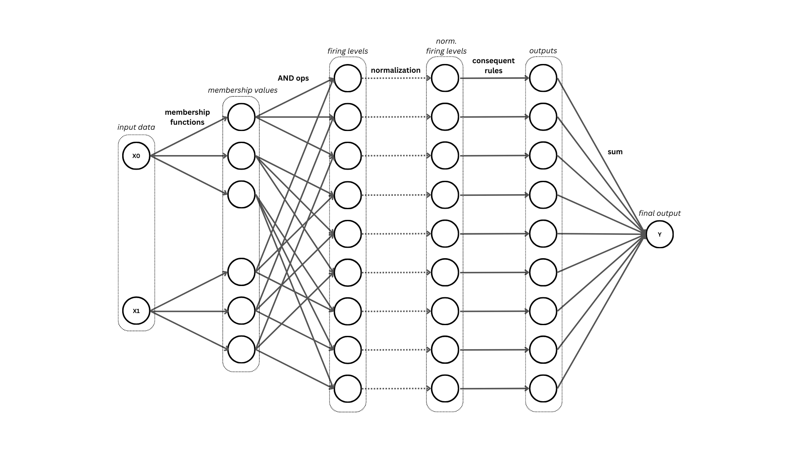
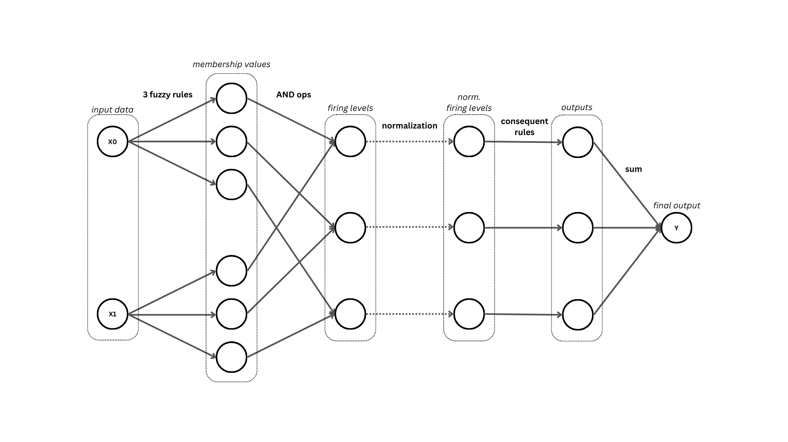

ANFIS homogéneo
Modelo ANFIS cuyo número de funciones de membresía es igual para todos los features de los datos de entrada.
Importación
Se importará la clase h_ANFIS y la función de membresía Gaussian_MF para los ejemplos a continuación.
import sys
import os
sys.path.append(os.path.abspath('../'))
import neuro_fuzzy_toolbox as nft
import torch
Instanciación
Los parámetros a tomar en cuenta para instanciar un modelo h_ANFIS son los siguientes:
input_size: Número de features de los datos de entrada.
num_mfs: Número de funciones de membresía para cada feature.
outputs: Número de salidas del modelo. Por defecto es 1.
membership_function: Función de membresía a utilizar. Puede ser Gaussian_MF, GeneralizedBell_MF. Por defecto es GeneralizedBell_MF.
output_type: Tipo de salida del modelo. Puede ser ‘default’, ‘sigmoid’ o ‘softmax’. El valor por defecto es obviamente ‘default’.
rule_reduced: Booleano que indica si se quiere instanciar un modelo h_ANFIS con reglas reducidas. Por defecto es False. Más detalles en rule-reduced ANFIS.
dtype: Tipo de dato de los tensores que contienen los parámetros del modelo. Por defecto es torch.float32.
Note
Con respecto al parámetro output_type: si se instancia un modelo con output_type=’sigmoid’, el modelo incorporará una capa sigmoide a la salida, mientras que con output_type=’softmax’, el modelo incorporará una función softmax opcional al método forward. Más detalles en Salida sigmoide y softmax.
Se utilizarán datos de entrenamiento generados aleatoriamente para el ejemplo a continuación.
# Se simulará un conjunto de datos de 200 muestras con 3 features
x_train = 2 * torch.rand(200, 3) - 1 # la dimensión debe ser (200, 3)
y_train = torch.rand(200) # la dimensión debe ser (200,)
A continuación se instancia un modelo h_ANFIS con 3 funciones de membresía para cada feature de los datos de entrada y con una salida. Se mostrarán todos los parámetros relevantes para instanciar la clase.
model = nft.h_ANFIS(
input_size=x_train.shape[1], # 3 features
num_mfs=3, # 3 funciones de membresía
outputs=1, # 1 salida
membership_function=nft.Gaussian_MF, # Función de membresía gaussiana
output_type='default'
)
Algunos métodos útiles
plot_premises
El método plot_premises() permite visualizar las funciones de membresía de los antecedentes del modelo.
model.plot_premises()

model.plot_premises(group_by_dim=True)

init_premises
Ahora mismo el modelo se encuentra con todos sus parámetros inicializados aleatoriamente. En caso de que se estime conveniente, es posible inicializar los parámetros de los antecedentes en base a los datos con los que se trabajará:
model.init_premises(x_train)
model.plot_premises(group_by_dim=True)

show_premises_structure, premises_structure y get_premises
Para visualizar los parámetros en cuestión se puede utilizar el método show_premises_structure(), el cual imprime por pantalla un dataframe con los valores de los parámetros de las funciones de membresía:
model.show_premises_structure()
mu (x0) sigma (x0) mu (x1) sigma (x1) mu (x2) sigma (x2)
MF 0 -0.990143 0.497452 -0.986824 0.494897 -0.983210 0.494364
MF 1 0.004761 0.497452 0.002970 0.494897 0.005518 0.494364
MF 2 0.999665 0.497452 0.992764 0.494897 0.994247 0.494364
El método model.premises_structure retorna el dataframe correspondiente.
Por otro lado, model.get_premises() retorna un tensor que contiene estos parámetros (como están almacenados en el modelo):
model.get_premises()
tensor([[[-0.9869, 0.4963],
[ 0.0056, 0.4963],
[ 0.9981, 0.4963]],
[[-0.9966, 0.4973],
[-0.0021, 0.4973],
[ 0.9924, 0.4973]],
[[-0.9920, 0.4968],
[ 0.0015, 0.4968],
[ 0.9951, 0.4968]]])
Note
La dimensión del tensor es (input_size, num_mfs, 2), donde input_size es el número de features de los datos de entrada, num_mfs es el número de funciones de membresía y 2 corresponde a los parámetros mu y sigma de las funciones de membresía (Gaussian_MF).
show_consequents_structure, consequents_structure y get_consequents
En cuanto a los consecuentes, hay métodos análogos a los de los antecedentes: show_consequents_structure(), model.consequents_structure y get_consequents().
model.show_consequents_structure()
- Output 1:
c0 (x0) c1 (x1) c2 (x2) c3
rule 1 -0.402982 0.913287 -0.147453 -0.570277
rule 2 -0.558947 -0.600798 -0.186016 -0.840755
rule 3 0.168397 -0.883966 0.474520 0.312040
rule 4 -0.122751 0.630311 -0.797790 0.563108
rule 5 0.361740 -0.286652 -0.325836 0.847129
rule 6 -0.456639 -0.769045 -0.617894 0.075701
rule 7 -0.118061 -0.842846 -0.196719 -0.067862
rule 8 -0.775172 0.827982 -0.956070 0.850902
rule 9 -0.781440 -0.009967 0.381071 0.127973
rule 10 0.578195 0.767374 0.944861 0.173381
rule 11 -0.579265 0.665136 -0.931385 0.141964
rule 12 -0.677500 -0.522054 -0.871355 -0.329690
rule 13 -0.931001 -0.564158 0.425146 -0.055656
rule 14 -0.163182 0.894706 0.172442 0.128253
rule 15 -0.343025 0.517860 0.329148 0.808215
rule 16 0.975743 0.005502 -0.814048 0.887746
rule 17 -0.015661 -0.065317 -0.171591 0.917433
rule 18 -0.682314 0.237104 0.514205 0.443589
rule 19 -0.061958 -0.398458 0.066680 0.805317
rule 20 -0.109509 0.672676 0.771990 0.259475
rule 21 -0.887838 0.148851 -0.494752 0.740001
rule 22 -0.506924 0.124466 -0.304620 0.406688
rule 23 0.096541 0.600472 0.615980 -0.438880
rule 24 0.421969 0.594888 -0.104359 0.558902
rule 25 0.454787 0.143593 -0.386165 -0.442262
rule 26 -0.872414 0.364831 0.624177 0.791676
rule 27 0.880137 -0.213823 -0.404114 -0.578382
La única diferencia es que, en el caso del método model.consequents_structure, se retorna una lista con los dataframe correspondientes a cada una de las salidas del modelo. En este caso, como solo hay una salida, se retorna una lista con un solo dataframe.
init_consequents
Al igual que con los antecedentes, los consecuentes pueden ser inicializados (se hace una estimación de mínimos cuadrados para su estimación):
model.init_consequents(x_train, y_train)
model.show_consequents_structure()
- Output 1:
c0 (x0) c1 (x1) c2 (x2) c3
rule 1 -38.603622 83.139351 -4.721482 35.447437
rule 2 11.611960 -18.674757 -16.584797 -8.276023
rule 3 4.777979 12.768584 -24.019762 47.975079
rule 4 -13.011658 80.083794 13.818563 0.792695
rule 5 14.744291 -15.238177 14.997739 15.207272
rule 6 -8.531214 18.137932 7.622557 -17.553904
rule 7 -46.518402 66.189758 57.811459 -69.268761
rule 8 -5.500585 -13.139522 21.414112 2.256964
rule 9 0.178966 24.161200 1.848382 -29.489714
rule 10 -39.433895 -28.971519 -17.817743 -47.437130
rule 11 7.517597 13.991263 -17.467180 15.493506
rule 12 26.560833 -4.370911 -14.732899 15.440524
rule 13 -11.223594 -27.542837 10.466902 12.842992
rule 14 10.921582 20.938026 14.123129 2.535148
rule 15 -9.170781 -15.080878 19.803434 -21.838345
rule 16 -38.962158 -25.079311 -14.063742 16.590000
rule 17 -4.855482 26.163994 -6.663449 -23.330303
rule 18 -1.587998 -20.165577 0.393830 22.284754
rule 19 -33.708397 63.667454 -24.790689 82.564964
rule 20 -3.639538 -16.275009 13.400737 -8.231231
rule 21 59.088257 4.166258 32.328194 -77.644859
rule 22 -13.431444 50.953583 -6.445808 -0.670563
rule 23 11.838889 -17.402069 -23.034710 -14.948477
...
rule 26 -2.833748 -13.963975 -10.615835 16.864780
rule 27 -1.262385 -5.599927 -22.673426 26.784224
forward
El método forward permite obtener la salida del modelo para un conjunto de datos de entrada en forma de un tensor de PyTorch. Este método genera el grafo de cómputo de PyTorch, lo que permite realizar backpropagation y entrenar el modelo.
model(x_train[:10])
tensor([ 0.0515, 0.2146, 0.5617, 0.2492, 0.4197, 0.1205, 0.0435, 0.2851, 0.1256, -0.3293], grad_fn=<SqueezeBackward1>)
Note
El método se comporta de diferente manera dependiendo del tipo de salida del modelo (especificado por el parámetro output_type).
Para evitar generar el grafo de cómputo de PyTorch, se puede utilizar el método no_grad de PyTorch.
with torch.no_grad():
output = model(x_train[:10])
print(output)
tensor([ 0.0515, 0.2146, 0.5617, 0.2492, 0.4197, 0.1205, 0.0435, 0.2851, 0.1256, -0.3293])
predict
El método predict retorna la predicción del modelo para un conjunto de datos de entrada en forma de un array de numpy sin generar el grafo de cómputo de PyTorch (como lo hace el método forward). Dependiendo del tipo de salida del modelo se realizan ciertas operaciones especiales para entregar el resultado.
model.predict(x)
array([ 0.05152027, 0.2146402 , 0.561749 , 0.24923508, 0.4197383 , 0.12053609, 0.04348549, 0.28514066, 0.12556443, -0.32934883], dtype=float32)
Salida sigmoide y softmax
El modelo h_ANFIS puede ser instanciado con distintos tipos de salida según el parámetro output_type, si es:
‘default’: La salida del modelo será la que está establecida por defecto (simplemente la suma de las salidas de cada una de las reglas del modelo).
‘sigmoid’: Se incorpora una capa sigmoide en la salida del modelo.
‘softmax’: Las función forward del modelo incorpora una función softmax opcional (activada por un atributo booleano: return_probs).
Note
La razón por la cual se incorpora una función opcional y no una capa softmax directamente es debido a como la función de pérdida cross entropy está implementada en PyTorch. Esta calcula la función softmax internamente, por lo que no es necesario hacerlo explícitamente en el modelo.
Esto cambia la estructura del modelo y la forma en que se obtienen las predicciones. A continuación se detallará cómo instanciar el modelo para cada uno de estos casos.
Salida sigmoide
Si se especifica ‘sigmoid’ como tipo de salida, el modelo se comportará como un clasificador binario (si tiene una salida). En este caso, se le añadirá una última capa sigmoide al modelo, por lo que su salida (método forward) será un número entre 0 y 1.
# Se simulará un conjunto de datos de 200 muestras con 2 features
x_train = 2 * torch.rand(200, 2) - 1 # la dimensión debe ser (200, 2)
Se inicializa el modelo con 2 funciones de membresía para cada feature de los datos de entrada y con una salida sigmoide.
model = nft.h_ANFIS(
input_size=x_train.shape[1], # 2 features
num_mfs=2, # 2 funciones de membresía
outputs=1, # 1 salida
output_type='sigmoid'
)
La salida del modelo (método forward) se vería de la siguiente manera:
model(x_train[:10])
tensor([0.4850, 0.4174, 0.5303, 0.5792, 0.5409, 0.3680, 0.4975, 0.5391, 0.4606, 0.5040], grad_fn=<SigmoidBackward0>)
El método predict retornará 1 si la probabilidad de la clase positiva es mayor a 0.5, 0 en caso contrario:
model.predict(x_train[:10])
array([0, 0, 1, 1, 1, 0, 0, 1, 0, 1])
Salida softmax
Si se especifica ‘softmax’ como tipo de salida, el modelo se comportará como un clasificador multiclase (si se especifican más de 2 salidas). En este caso, el método forward tendrá un parámetro adicional llamado return_probs que, si es True, retornará las probabilidades de las clases (las salidas pasarán por una función softmax), en caso contrario, retornará los logits sin normalizar de las clases. En este caso, se debe especificar el número de clases en el parámetro outputs.
# Se simulará un conjunto de datos de 200 muestras con 3 features
x_train = 2 * torch.rand(200, 3) - 1 # la dimensión debe ser (200, 3)
Se inicializa el modelo con 2 funciones de membresía para cada feature de los datos de entrada y con una salida softmax.
model = nft.h_ANFIS(
input_size=x_train.shape[1], # 3 features
num_mfs=3, # 3 funciones de membresía
outputs=4, # 4 clases
membership_function=Gaussian_MF, # Función de membresía gaussiana
output_type='softmax'
)
La salida del modelo (método forward) serán los logits de cada clase:
model(x_train[:10])
tensor([[ 0.4425, 0.2284, 0.3152, 0.1618],
[ 0.3934, 0.1950, 0.3640, 0.2418],
[ 0.2840, 0.2651, 0.3129, 0.1921],
[ 0.2482, 0.5278, 0.3655, -0.7933],
[ 0.0890, 0.1157, 0.2529, 0.0178],
[ 0.1855, 0.2477, 0.2571, -0.1530],
[ 0.4424, -0.0780, 0.4180, 0.2541],
[ 0.2046, 0.4696, 0.2142, 0.0049],
[ 0.4243, -0.0578, 0.3322, 0.1703],
[ 0.5209, 0.3951, 0.3004, 0.5666]], grad_fn=<SqueezeBackward1>)
Si se especifica return_probs=True en este método, se retornarán las probabilidades de las clases (pasa por una función softmax):
model(x_train[:10], return_probs=True)
tensor([[0.2905, 0.2345, 0.2557, 0.2194],
[0.2739, 0.2247, 0.2660, 0.2354],
[0.2549, 0.2501, 0.2624, 0.2325],
[0.2632, 0.3480, 0.2959, 0.0929],
[0.2418, 0.2483, 0.2848, 0.2251],
[0.2597, 0.2763, 0.2789, 0.1851],
[0.2942, 0.1749, 0.2871, 0.2437],
[0.2420, 0.3154, 0.2443, 0.1982],
[0.3026, 0.1868, 0.2759, 0.2347],
[0.2680, 0.2364, 0.2150, 0.2806]], grad_fn=<SoftmaxBackward0>)
El método predict retornará el índice de la clase con mayor probabilidad:
model.predict(x_train[:10])
array([0, 0, 2, 1, 2, 2, 0, 1, 0, 3])
Tip
El valor ‘softmax’ junto con la multiple salida se puede usar para clasificación binaria de todas maneras (con 2 outputs), la diferencia estará en la estructura interna del modelo, pues tendrá conjuntos de parámetros concecuentes distintos para cada salida:
{kind=link}

Si se usa ‘sigmoid’ con 1 output, el modelo tendrá una capa sigmoide al final y 1 un conjunto de parámetros consecuentes para la salida en cuestión.
{kind=link}

Sin embargo la aplicación es la misma, queda en el criterio del usuario decidir cuál usar.
Múltiples salidas
La única diferencia en la arquitectura del modelo al trabajar con múltiples salidas es la cantidad de parámetros consecuentes generados.
# Se simulará un conjunto de datos de 200 muestras con 2 features
x_train = 2 * torch.rand(200, 2) - 1 # la dimensión debe ser (200, 2)
# Se instancía un modelo para un problema de regresión con 3 funciones de membresía para cada feature de los datos de entrada y con 2 salidas
model = nft.h_ANFIS(
input_size=x_train.shape[1], # 2 features
num_mfs=3, # 3 funciones de membresía
outputs=2, # 2 salidas
membership_function=Gaussian_MF, # Función de membresía gaussiana
output_type='default'
)
Por cada salida se generará un conjunto de parámetros concecuentes:
model.show_consequents_structure()
- Output 1:
c0 (x0) c1 (x1) c2
rule 1 0.412696 0.522680 0.090145
rule 2 -0.976030 -0.419625 0.283456
rule 3 0.254746 0.443201 -0.872905
rule 4 0.790756 0.528562 0.858889
rule 5 0.651066 -0.942244 -0.114714
rule 6 -0.897736 0.491714 -0.059783
rule 7 -0.075024 0.502939 -0.868872
rule 8 -0.819807 -0.380666 0.491858
rule 9 0.367133 -0.824872 0.538071
- Output 2:
c0 (x0) c1 (x1) c2
rule 1 -0.682649 0.267264 0.636341
rule 2 0.402898 -0.281733 -0.870279
rule 3 0.929400 0.168972 0.334629
rule 4 -0.860564 0.804722 0.599917
rule 5 0.660574 0.454537 0.582051
rule 6 0.882556 0.788579 0.761563
rule 7 -0.752488 -0.172638 0.551565
rule 8 -0.063006 -0.112478 -0.040473
rule 9 0.690270 0.598800 -0.420998
Ahora la salida del modelo será de dimensión (batch_size, outputs):
model(x_train[:10])
tensor([[-0.2550, 0.4605],
[ 0.2885, 0.1500],
[-0.3057, 0.2601],
[ 0.5863, 0.2624],
[ 0.1534, 0.4544],
[-0.4603, 0.4648],
[ 0.4690, 0.4441],
[-0.1083, 0.2348],
[ 0.0827, 0.1670],
[-0.2726, 0.4799]], grad_fn=<SqueezeBackward1>)
Tip
El modelo también debería ser aplicable a problemas multilabel, bastaría con usar output_type=’sigmoid’ con múltiples salidas.
{kind=link}

De esta manera se permitirían salidas en las que más de una clase sea detectada. Pero queda a criterio del usuario decidir si usar este enfoque o varios modelos de tipo ‘sofmtax’ paralelamente.
rule-reduced ANFIS
Modelo ANFIS con reglas reducidas. Es una variante del modelo ANFIS homogéneo que reduce el número de reglas y, por ende, el número de parámetros concecuentes en el modelo.
A continuación se muestra una comparación entre el modelo ANFIS homogéneo y el modelo ANFIS con reglas reducidas, ambos con 2 features y 3 funciones de pertenencia por dimensión en los datos de entrada:
Modelo ANFIS homogéneo
{kind=link}

Modelo rule-reduced ANFIS
{kind=link}

Para su instanciación, la clase h_ANFIS tiene un parámetro llamado rule_reduced, el cual debe ser establecido en True (Por defecto es False):
import neuro_fuzzy_toolbox as nft
# Se simulará un conjunto de datos de 200 muestras con 2 features
x_train = 2 * torch.rand(200, 2) - 1 # la dimensión debe ser (200, 2)
model = nft.h_ANFIS(
input_size=2,
num_mfs=3,
outputs=1,
rule_reduced=True
)
Los parámetros concecuentes generados por el modelo ANFIS con reglas reducidas serán claramente menores que los generados por el modelo ANFIS homogéneo:
model.show_consequents_structure()
- Output 1:
c0 (x0) c1 (x1) c2
rule 1 -0.729495 -0.345188 0.441197
rule 2 0.894614 0.420384 -0.635486
rule 3 0.235036 -0.248037 0.702353
Todos los métodos y herramientas presentados con el modelo ANFIS homogéneo (h_ANFIS) son válidos para el modelo ANFIS con reglas reducidas, como las múltiples salidas y las aplicaciones a distintos tipos de problemas.
Important
Además de esta opción en la clase h_ANFIS, este modelo también tiene una clase propia llamada rule_reduced_ANFIS cuya principal diferencia es la manera en la que se almacenan los parámetros. Esta clase es menos eficiente en términos de memoria y tiempo de ejecución, pero permite una mayor flexibilidad en la manipulación de los parámetros del modelo, más detalles en rule-reduced ANFIS.